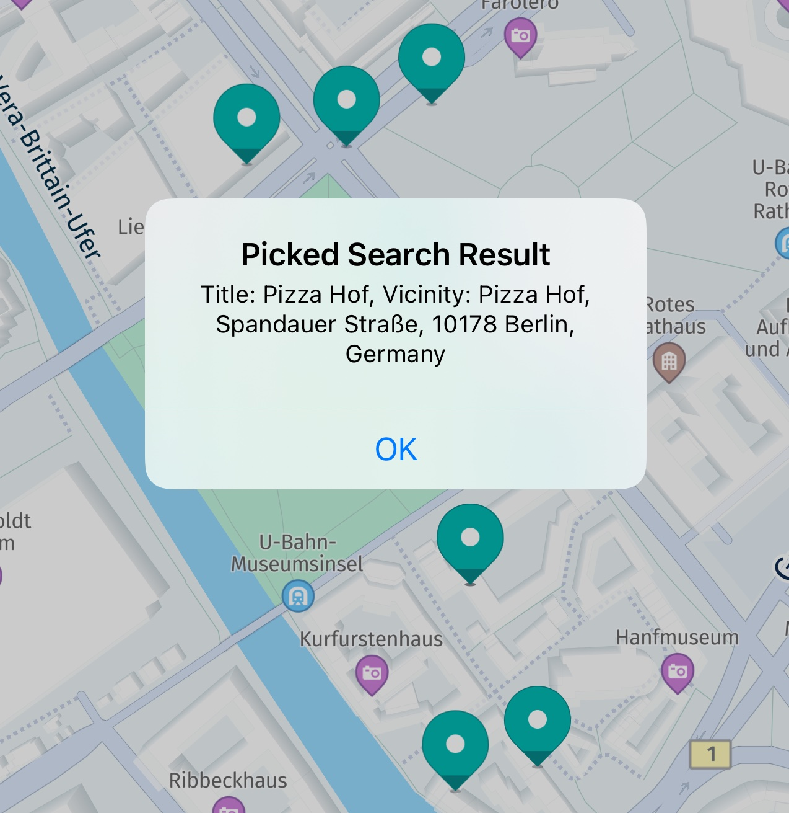

Get started with Search
Leveraging HERE's extensive global data set, which includes hundreds of millions of POIs and addresses worldwide, the HERE SDK enables fast and easy search functionality. With the HERE SDK, you can efficiently tackle a variety of search-related tasks using a single SearchEngine:
- Discover places: Search and discover places from HERE's vast database worldwide, either by category or by setting a search term.
- Generate auto suggestions: Search for places while typing a search term to offer query completion.
- Reverse geocode an address: Find the address that belongs to certain geographic coordinates.
- Geocode an address: Find the geographic coordinates that belong to an address.
- Search by ID: Search for a place identified by a HERE Place ID.
- Search along a route: Search for places along an entire route.
- Search by category along a route: Search for places based on categories along an entire route. This feature is in beta state.
One feature that all search variants have in common is that you can specify the location or area where you want to search. Setting an area can be done by passing in a rectangle area specified by a GeoBox or even a circle area specified by a GeoCircle. Any potential search result that lies outside the specified area is ranked with lower priority, except for relevant global results - for example, when searching for "Manhattan" in Berlin. The underlying search algorithms are optimized to help narrow down the list of results to provide faster and more meaningful results to the user.
Note
Each search request is performed asynchronously. An online connection is required.
Initialize the SearchEngine
The massive database of places provided by HERE's Location Services can be easily accessed and explored using the HERE SDK's SearchEngine. Let's look at an example. Begin by creating a new SearchEngine instance:
try {
_searchEngine = SearchEngine();
} on InstantiationException {
throw Exception("Initialization of SearchEngine failed.");
}
Creating a new SearchEngine instance can throw an InstantiationException that you can handle as shown above.
Search for places
Let's assume you want to find all "pizza" places around the current map center shown on the device. Before you can start the search, you need to specify a few more details:
SearchOptions searchOptions = SearchOptions();
searchOptions.languageCode = LanguageCode.enUs;
searchOptions.maxItems = 30;
Here, you create a new SearchOptions object holding the desired data:
- You can specify the language of the returned search results by setting a
LanguageCode. maxItemsis set to define the maximum number of result items that should be delivered in the response. In the example above, you limit the results to 30. If the engine discovers more search results than requested, it will return only the 30 most relevant search results.
You do a one-box search as you want to find all results within the current viewport. The SearchEngine provides three different ways to specify the search location:
- Search at
GeoCoordinates: Performs an asynchronous search request around the specified coordinates to provide the most relevant search results nearby. - Search in a
GeoCirclearea: Similar to the above, but searches for results within the specified circle area, which is defined by center geographic coordinates and a radius in meters. - Search in a
GeoBoxarea: Similar to the above, but searches for results within the specified rectangle area, which is defined by the southwest and northeast coordinates passed as parameters.
A one-box search is ideal to discover places nearby. As input you can provide a free-form text in various and mixed languages (such as Latin, Cyrillic, Arabic, Greek).
You can specify the area and the term you want to search for together. For example, below you can set queryString to "pizza":
GeoBox viewportGeoBox = _getMapViewGeoBox();
TextQueryArea queryArea = TextQueryArea.withBox(viewportGeoBox);
TextQuery query = TextQuery.withArea(queryString, queryArea);
Here we have left out the code for _getMapViewGeoBox(). You can create and pass in any GeoBox that fits to your use case. A possible implementation can be found in the accompanying example apps.
Preferably, the results within the specified map area are returned. If no results were found, global search results may be returned. However, relevant global results such as prominent cities or states may be included - regardless of the specified search location.
Note
The query string can contain any textual description of the content you want to search for. You can pass in several search terms to narrow down the search results - with or without comma separation. So, "Pizza Chausseestraße" and "Pizza, Chausseestraße" will both lead to the same results and will find only pizza restaurants that lie on the street 'Chausseestraße'. Please also note that it is an error to pass in an empty query string, and in this case, the search will fail.
Finally, you can start to search asynchronously:
_searchEngine.searchByText(query, searchOptions, (SearchError? searchError, List<Place>? list) async {
if (searchError != null) {
_showDialog("Search", "Error: " + searchError.toString());
return;
}
// If error is null, list is guaranteed to be not empty.
int listLength = list!.length;
_showDialog("Search for $queryString", "Results: $listLength. Tap marker to see details.");
// Add new marker for each search result on map.
for (Place searchResult in list) {
// ...
}
});
Before you can look into the results, you should check for a possible SearchError. For example, if the device is offline, the list will be null and the error enum will indicate the cause. In this case, you call a helper method _showDialog() to show the error description to the user. A possible implementation of _showDialog() can be accessed from the accompanying "Search" example's source code - it does not contain any HERE SDK specific code.
Note
The search response contains either an error or a result: SearchError and List<Place>. Both can never be null at the same time - or non-null at the same time.
Show the results on the map
Now, it's time to look into the results. If no matching results could be found, an error would have been caught beforehand:
// If error is null, list is guaranteed to be not empty.
int listLength = list!.length;
_showDialog("Search for $queryString", "Results: $listLength. Tap marker to see details.");
// Add new marker for each search result on map.
for (Place searchResult in list) {
Metadata metadata = Metadata();
metadata.setCustomValue("key_search_result", SearchResultMetadata(searchResult));
// Note: getGeoCoordinates() may return null only for Suggestions.
addPoiMapMarker(searchResult.geoCoordinates!, metadata);
}
SearchResultMetadata is a custom class that may look like below:
import 'package:here_sdk/core.dart';
import 'package:here_sdk/search.dart';
class SearchResultMetadata implements CustomMetadataValue {
Place searchResult;
SearchResultMetadata(Place place) : searchResult = place;
String getTag() {
return "SearchResult Metadata";
}
void release() {
// Deprecated. Nothing to do here.
}
}
Finally, you can iterate over the list of results. Each Place contains various fields describing the found search result.
In our example, to add a marker to the map, you are interested in the place's location. In addition, you create a Metadata object where you can store a SearchResult.
Note
The Metadata object can contain various data types to allow easy association of a MapMarker with the result data. This way, you can hold all information related to a map marker in one object - this can be convenient when presenting this data, for example, after the user taps on a map marker. Even complex data objects can be stored by implementing the CustomMetadataValue interface, as shown above.
A possible implementation of addPoiMapMarker() can be accessed from the accompanying "Search" example's source code; see also the section about MapMarker in this guide.
Future<MapMarker> _addPoiMapMarker(GeoCoordinates geoCoordinates) async {
// Reuse existing MapImage for new map markers.
if (_poiMapImage == null) {
Uint8List imagePixelData = await _loadFileAsUint8List('poi.png');
_poiMapImage = MapImage.withPixelDataAndImageFormat(imagePixelData, ImageFormat.png);
}
MapMarker mapMarker = MapMarker(geoCoordinates, _poiMapImage!);
_hereMapController.mapScene.addMapMarker(mapMarker);
_mapMarkerList.add(mapMarker);
return mapMarker;
}
Future<Uint8List> _loadFileAsUint8List(String fileName) async {
// The path refers to the assets directory as specified in pubspec.yaml.
ByteData fileData = await rootBundle.load('assets/' + fileName);
return Uint8List.view(fileData.buffer);
}
Future<void> addPoiMapMarker(GeoCoordinates geoCoordinates, Metadata metadata) async {
MapMarker mapMarker = await _addPoiMapMarker(geoCoordinates);
mapMarker.metadata = metadata;
}
After you have at hand the picked map marker object, you can get the Metadata information that you have set in the previous step:
MapMarker topmostMapMarker = mapMarkerList.first;
Metadata? metadata = topmostMapMarker.metadata;
if (metadata != null) {
CustomMetadataValue? customMetadataValue = metadata.getCustomValue("key_search_result");
if (customMetadataValue != null) {
SearchResultMetadata searchResultMetadata = customMetadataValue as SearchResultMetadata;
String title = searchResultMetadata.searchResult.title;
String vicinity = searchResultMetadata.searchResult.address.addressText;
_showDialog("Picked Search Result", title + ". Vicinity: " + vicinity);
return;
}
}
Not all map markers may contain Metadata. Unless you have set the Metadata beforehand, getMetadata() will return null. In this example, you simply check if the data stored for "key_search_result" is not null, so that you know it must contain search data. You can then downcast to our custom type SearchResultMetadata which holds the desired Place.
Consult the API Reference for a complete overview on the available nullable fields.

Zoom to places
The above code uses a GeoBox to search directly in the shown map viewport, so it is not necessary to zoom to the found results. Instead of a GeoBox you can search also around a location ("search around me"), inside a GeoCircle, along a GeoCorridor or inside countries by passing a list of CountryCode values. See TextQuery.Area for all supported types.
If the search area is not equal to the shown map viewport, you can use the following code to zoom to the results by creating a GeoBox from a list of GeoCoordinates. Get the GeoBox from GeoBox.containing(geoCoordinatesList).
// Keep default orientation for bearing and tilt.
_hereMapController.camera.lookAtAreaWithGeoOrientation(geoBox, GeoOrientationUpdate(null, null));
This instantly moves the camera. If desired, you can also apply various animation styles to fly the camera to a desired area. Look at the MapCamera section and check the "camera_keyframe_tracks_app" example on GitHub.
If you want to apply an additional padding, use an overloaded lookAt() method that accepts a viewRectangle as additional parameter. Note that the rectangle is specified in pixels referring to the map view inside which the GeoBox is displayed.
var origin = Point2D(5, 5);
var sizeInPixels = Size2D(_hereMapController.viewportSize.width - 10, _hereMapController.viewportSize.height - 10);
var paddedViewRectangle = Rectangle2D(origin, sizeInPixels);
The above code creates a rectangle that can be used to add a 5 pixel padding around any GeoBox that is shown in the map viewport.
Try the Search example app
You can find the code for the above and the following sections as part of the search_app example app on GitHub.